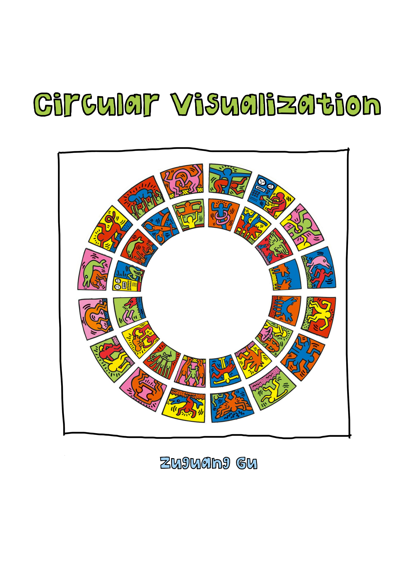

Circular Visualization in R
Zuguang Gu
last revised on 2017-03-31
About
This is the documentation of the circlize package. Examples in the book are generated under version 0.4.0.

If you use circlize in your publications, I would be appreciated if you can cite:
Gu, Z. (2014) circlize implements and enhances circular visualization in R. Bioinformatics. DOI: 10.1093/bioinformatics/btu393